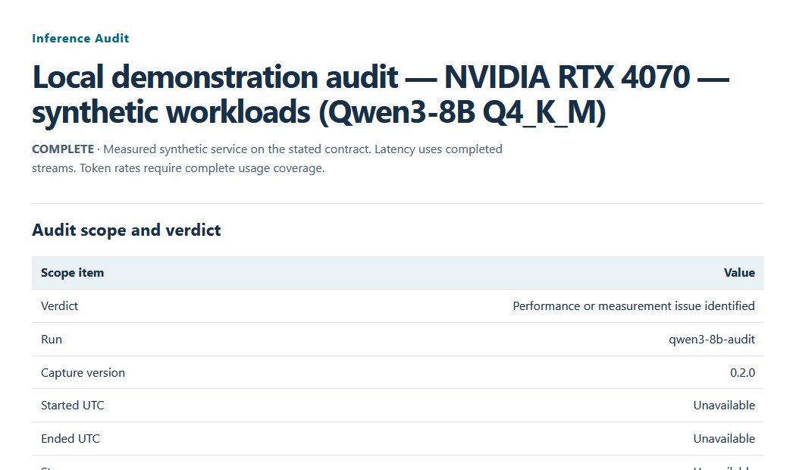

What the audit tells you.
The Qwen load sweep shows where a service can miss its objectives even when most requests succeed. Read the interpretation first, then inspect the underlying report.
Would you serve at this load?
Replay either traffic level from the same two-slot RTX 4070 server.
Agent tasks passed 10 of 20 offers. The family breakdown shows where to investigate.
Start with the decision.
Check the workload target
Both traffic levels missed the report’s strict qualification. The aggregate total can hide which workload needs attention.
Find the family that missed
Agent tasks missed the target at both loads. Check their task outcomes and deadlines before deciding what to change.
Workload objectives ↗Read latency alongside goodput
First-token latency answers when users see a response. Completion latency answers when the work is done. Check both before calling a higher load usable.
Response latency ↗Open the source report.
Captured with Inference Audit 0.2.0 and re-rendered offline with 0.2.1. Version in the export refers to the original capture. Run labels are public aliases, and exact timestamps and raw answers were omitted.

Gemma 4 12B IT QAT
A shorter compatibility capture with measured latency and token usage. Captured with 0.2.0 and rendered with 0.2.1. It did not run the Qwen load sweep.
Discuss a staging pilot
Bring an approved inference endpoint, a representative workload, and the latency or correctness target you need to meet. We'll scope the traffic limits and review the evidence together.